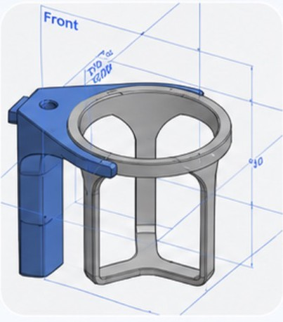
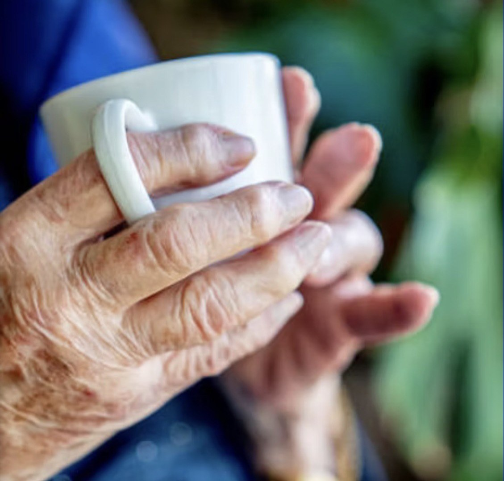
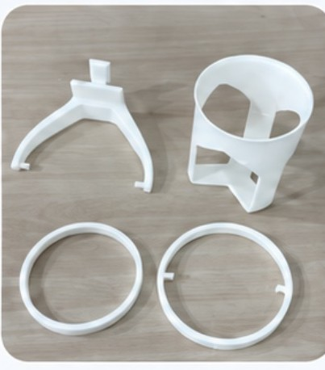
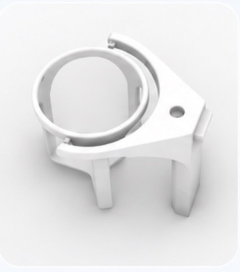
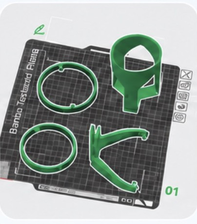
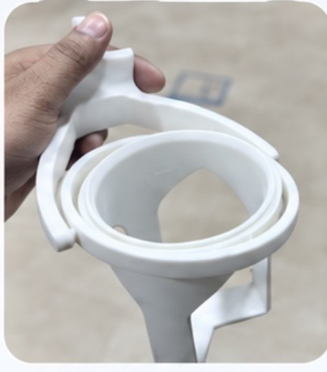
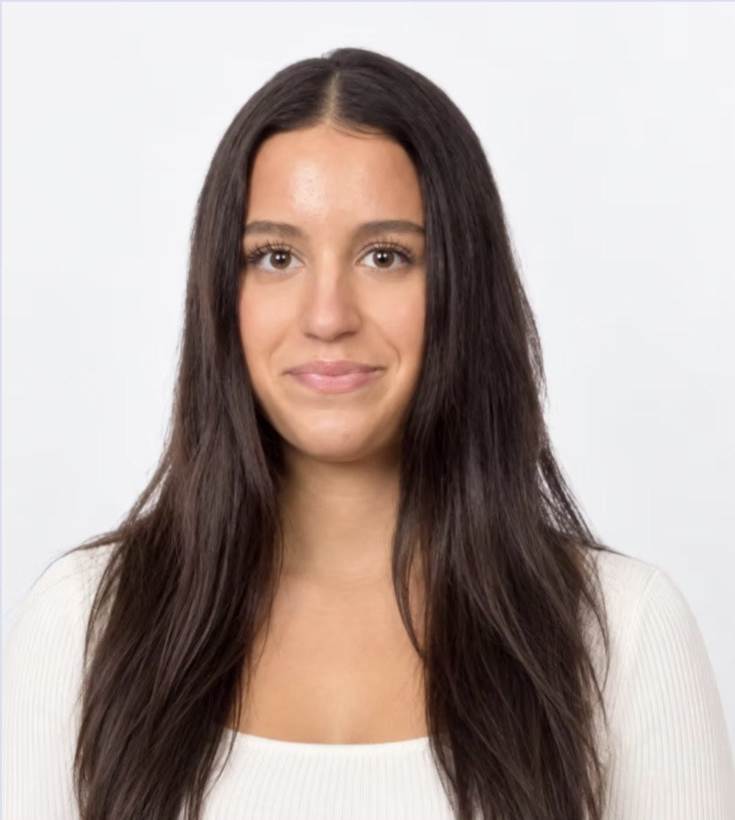

01CAD
CAD modelling
Handle, cradle and rings are drawn as separate bodies so each can be reprinted and tuned on its own.
ParkiCup is a gimbal-stabilised cup holder for people living with Parkinson's. Two pivoting rings decouple the drink from the tremor, a wide handle suits a weaker grip, and a foldable straw makes sipping possible without lifting at all.

Parkinson's brings tremor, muscle stiffness, slow movement and reduced grip strength. A standard cup answers none of that: the handle is small, the mass sits high, and every shake of the wrist travels straight into the liquid.
Spills follow. So does the quieter cost: people stop drinking in company, wait for help, or simply drink less. ParkiCup was designed so that the drink, not the person, does the adapting.
Two short films made from the prototype photographs. The hand carries a 4–6 Hz tremor; the rings swing, the cradle hangs level, nothing spills.

1 2 3 4A Y-shaped grip the whole hand can close around. No pinch grip, no small loop; the load sits low and close to the wrist.
A conical sleeve that takes an ordinary cup or glass. The drink you already own, made usable again.
Mounted to the handle on two opposing pins. It lets the cradle swing front to back while the hand tilts.
Pinned to the outer ring at 90°. Together the two rings form a gimbal: the cradle hangs from its pivots and gravity keeps the liquid level, whatever the hand does.
Every part was modelled, printed and assembled by the designer herself. These are the original photographs from the build.

Handle, cradle and rings are drawn as separate bodies so each can be reprinted and tuned on its own.

Renders check the balance point of the cradle and how far the rings can swing without touching the handle.

All four parts fit on one bed. Rings print flat for roundness; the handle prints upright for strength along the grip.
Rings snap onto their pins by hand. No screws, no glue, so a worn part can be swapped in seconds.

Held, tilted and shaken. The cradle finds level on its own and the wide handle sits comfortably in the palm.
Numbers below describe the first working prototype. They will be updated as testing with users continues.



"How can design make everyday life easier for people living with Parkinson's?"
Selin is a student with a strong interest in health, design and innovation. ParkiCup began with that one question, and she carried it through alone: research, CAD, printing, assembly and testing.
The project rests on a simple belief: thoughtful design can improve small but meaningful moments, and health, engineering and empathy belong in the same room.
Gimbal-stabilised cup holder with a wide handle and foldable straw.
Further everyday aids for tremor and reduced grip are being designed on the same principle: let the object adapt, not the person.
If a daily task has become difficult because of tremor, write to us. Real problems set the next design brief.
Three posts a week: what Parkinson's does to the hands, small adaptations that help today, and the making of ParkiCup.
Series · UnderstandWe are looking for people living with Parkinson's, carers and clinicians who would try ParkiCup and tell us what to change.
Write to us